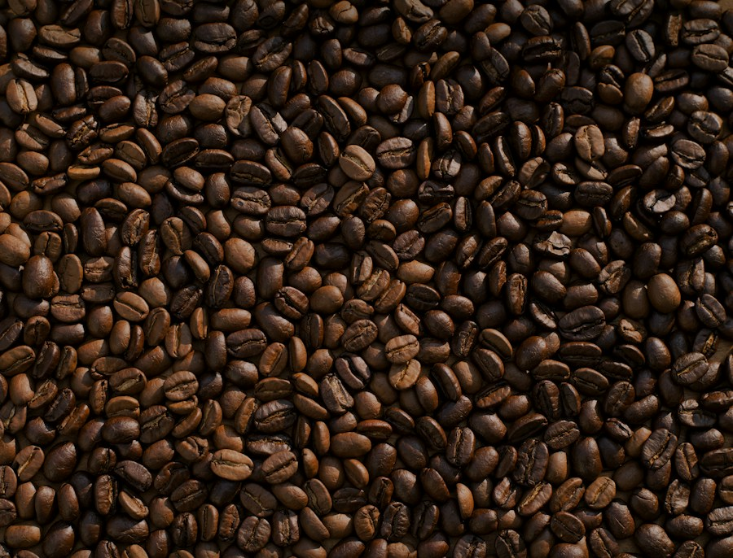
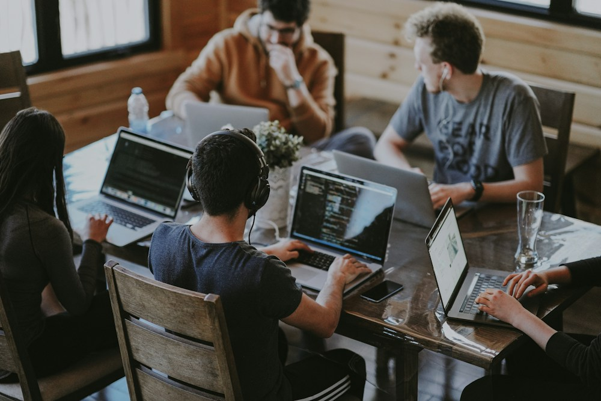

THE SUNDAY LONG READ
Why rest is the new productivity hack. A gentler way to make room for what matters.
GOOD THINGS, HANDPICKED.
Editor's picks ✳
A few things we think
you'll love this week.
No editor's picks match this selection.
FOR YOUR OPEN TABS
The latest
No stories here just yet.
Try another topic or a different search. Saved stories appear after you tap a heart.
THE CONVERSATION STARTERS
Trending this week ↗
Read, loved, passed along.
Illustrative readership, not live analytics.

Less, but
lovelier.
THE CURATED COLLECTION
The slow
living guide.
On intentional living, digital boundaries, and finding a little joy in the wonderfully ordinary.
HELLO, WE'RE THE SUNDAY EDIT.
For the curious.
The intentional.
The quietly ambitious.
We started as a newsletter for friends in 2023. A weekly note with the stories, recipes, and ideas we were actually excited about.
Three years and 24,000 subscribers later, we're still writing for the same kind of reader. Someone like you.
Founded by Mia Chen & Leo Alvarez · Brooklyn, NYFictional publication and sample readership.
